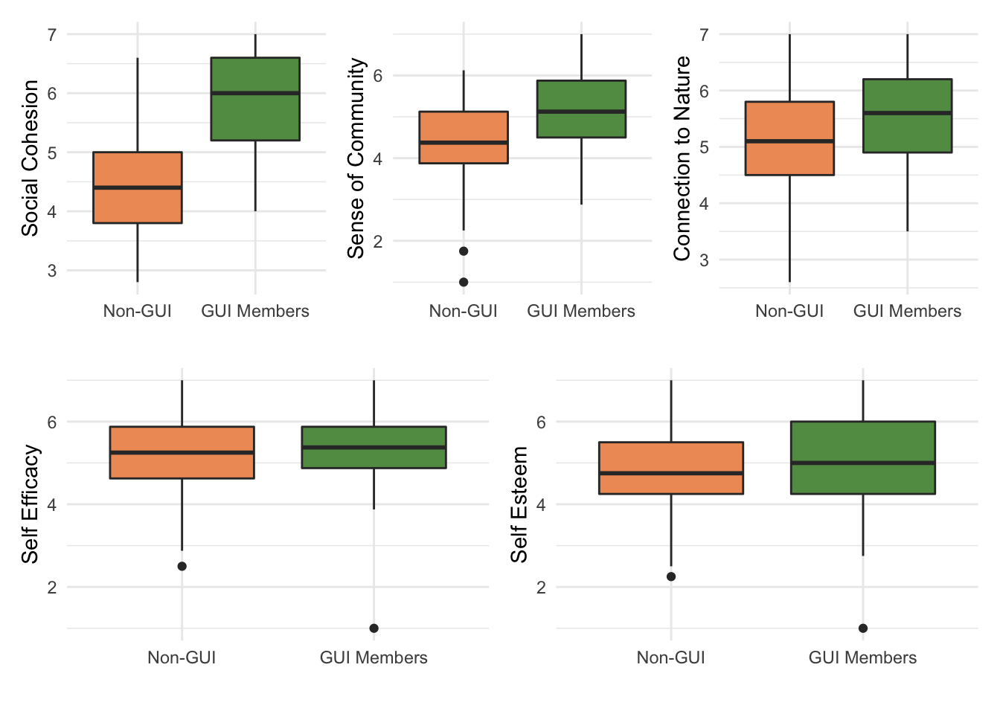

Chapter 2 GUI Online Survey: Comparing GUI and Non-GUI Members
- 193 entries (GUI: 104, non-GUI: 89)
2.1 Measurements
2.1.1 Online Survey
The Frequency of Visits (
frequency_codedorfrequency) was measured by one question, “In the past 2 years, on average how many days per year did you visit GUI? (i.e. 80 (days per year)”.The Duration of Commitment (
commitment_codedorcommitment) was measured by one question, “Which month and year did you attend an activity in GUI for the first time?”. The duration was attained by calculating months between 1) the date the respondent visited the GUI for the first time and 2) the date the respondent submited the survey response. For example, if one respondent visited GUI for the first time in November 2017 and submited the survey response in December 2019, the total duration would be 24 months.Types of Programs Engaged (
number_programs) was measured by the number of program types attended by the respondents. For example, if one responded have attended Balik Kampong and Sketching before, it would be 2.Social Cohesion and Trust (
SoCoh) scale consists of five conceptually related items that aim to assess feelings of “trust, shared norms and values, positive and friendly relationships, and feelings of being accepted and belonging” (Forrest & Kearns, 2001; Sampson et al., 2007). Respondents were asked how strongly they agreed (on a seven-point scale) on five statements such as “People around here are willing to help their neighbors”. Those who have engaged in any GUI programs were asked about the GUI community instead of their neighbors (i.e. “People around GUI are willing to help their members”).Sense of Community (
SOC): The Brief Sense of Community Scale aims to assess four dimensions of sense of community defined in the McMillan and Chavis’ (1986) model: 1) needs fulfilment is a perception that members’ needs will be met by the community (); 2) group membership is a feeling of belonging or a sense of interpersonal relatedness; 3) influence is measured as a sense that one matters, or can make a difference, in a community and that the community matters to its members; and 4) emotional connection is a feeling of attachment or bonding rooted in members’ shared history, place or experience. Respondents were asked how strongly they agreed (on a seven-point scale) on eight statements such as “I belong in my neighborhood.” The scale for GUI members was modified to ask about the GUI community instead of their neighborhood (i.e. “I belong in the GUI community”).Connectedness to Nature (
CNS): Participants responded to the modified version of Connectedness to Nature Scale (CNS) that intends to assess individuals’ emotional connection to nature and a sense of oneness with the natural world (Mayer & Frantz, 2004). Examples of the items are “I often feel a sense of oneness with the natural world around me’’ and ‘‘I think of the natural world as a community to which I belong.’’ Respondents assessed each statement ranging from “1 strongly disagree” to “7 strongly agree”. Both GUI members and the control groups responded to the same set of 10 items.Intrinsic Motivation Inventory (
IMI) is a multidimensional measurement scale developed based on Self-Determination Theory (Ryan & Deci, 2000). We used the modified version of IMI, measuring the respondent’s self-reported interest or enjoyment, perceived competence, and perceived choice about activities in GUI. The interest/enjoyment subscale (Intrinsic Motivation or IM) represents the self-report measure of intrinsic motivation. The perceived choice and perceived competence concepts are considered as positive predictors of both self-report and behavioral measures of intrinsic motivation.Perceived Choice (
PChoice) measures how individuals feel they engage in one activity because they choose to do it.Perceived Competence (
PComp) assesses how effective individuals feel when they are performing a task (Monteiro et al., 2015). Examples of the items are “I believe I can choose what to do when I take part in activities in GUI” (perceived choice) and “After working at GUI activity for awhile, I felt pretty competent” (perceived competence).
Self-Esteem (
Self_Est): We used the modified version of Rosenberg Self-Esteem Scale (four items) that assesses respondents’ self-worth by measuring both positive and negative feelings about self (Rosenberg, 1965). All items—such as “On the whole, I am satisfied with myself.”—were answered using a 7-point scale, ranging from “1 strongly disagree” to “7 strongly agree”.Self-Efficacy (
Self_Eff): We used the New General Self-Efficacy Scale (NGSE) that aims to measure respondents’ “beliefs in one’s capabilities to mobilize the motivation, cognitive resources, and courses of action needed to meet given situational demands” (Bandura, 2010). Respondents answered eight items, using a 7-point scale, ranging from “1 strongly disagree” to “7 strongly agree”. Examples of items include “I will be able to achieve most of the goals that I have set for myself.” and “When facing difficult tasks, I am certain that I will accomplish them”.
2.1.2 Quasi-Experiment
Restoration Outcome Scale (
ROS) and Perceived Restrictiveness Scales (PRS): We used two scales to assess restorative experiences of participating in GUI programs (Hartig et al., 1997; Korpela et al., 2008). TheROSscale has six items, of which three measure relaxation and calmness (e.g. “I feel restored and relaxed), one reflects attention restoration (e.g. “I feel focused and alert”), and two reflect clearing one’s thoughts (e.g. “I can forget everyday worries”). The modified version ofPRShas 10 items, responding to the four restorative qualities—being away, fascination, coherence and compatibility (Hartig et al., 1997). The PRS was measured only once in the post-assessment.Positive and Negative Affect Scale (PANAS): We used the modified version of Positive and Negative Affect Scale (
PANAS) that measures the self-reported mood of participants before and after participating the GUI programs (Watson et al., 1988). Participants responded to nine items indicating positive affect, high energy level, and high concentration, and another set of nine items indicating negative affect, distress, and a variety of aversive mood states (afraid, upset, scared).Connectedness to Nature:
CNSwas used only in the post-assessment as a control valuable since those who have a strong sense of connection with nature might show high scores in respective scales regardless of the participation in GUI programs.
2.2 Internal Consistency
All scales of psychological measures used in the online survey have good Cronbach’s alpha, ranging from .72 to .91 (good internal consistency). Therefore, we will proceed to include all the questions in the respective scales.
| vars | scales | Cronbachs |
|---|---|---|
| 1 | Social Cohesion | 0.83 |
| 2 | Sense of Community | 0.91 |
| 3 | Connection to Nature | 0.89 |
| 4 | Self Esteem | 0.71 |
| 5 | Self Efficacy | 0.91 |
2.3 Descriptive statistics
2.3.1 Overall
| Descriptive Statistics of Major Variables (GUI and Non GUI Members) | |||||||||||||
|---|---|---|---|---|---|---|---|---|---|---|---|---|---|
| vars | scales | n | mean | sd | median | trimmed | mad | min | max | range | skew | kurtosis | se |
| 1 | Age | 193 | 37.52 | 12.10 | 36.00 | 36.88 | 13.34 | 18.0 | 72.0 | 54.00 | 0.46 | −0.44 | 0.87 |
| 2 | Social Cohesion | 193 | 5.23 | 1.14 | 5.20 | 5.25 | 1.48 | 2.8 | 7.0 | 4.20 | −0.06 | −0.99 | 0.08 |
| 3 | Sense of Community | 193 | 4.84 | 1.10 | 4.88 | 4.86 | 1.30 | 1.0 | 7.0 | 6.00 | −0.24 | 0.04 | 0.08 |
| 4 | Connection to Nature | 193 | 5.35 | 0.96 | 5.40 | 5.36 | 1.04 | 2.6 | 7.0 | 4.40 | −0.11 | −0.74 | 0.07 |
| 5 | Self Esteem | 193 | 4.95 | 1.06 | 5.00 | 4.96 | 1.11 | 1.0 | 7.0 | 6.00 | −0.24 | 0.13 | 0.08 |
| 6 | Self Efficacy | 193 | 5.29 | 0.92 | 5.38 | 5.31 | 0.74 | 1.0 | 7.0 | 6.00 | −0.66 | 1.79 | 0.07 |
2.3.2 GUI Members
| Descriptive Statistics of Major Variables (Only GUI Members) | |||||||||||||
|---|---|---|---|---|---|---|---|---|---|---|---|---|---|
| vars | scales | n | mean | sd | median | trimmed | mad | min | max | range | skew | kurtosis | se |
| 1 | Age | 104 | 37.86 | 13.00 | 35.50 | 37.13 | 12.60 | 18.0 | 72.0 | 54.00 | 0.50 | −0.41 | 1.27 |
| 2 | Social Cohesion | 104 | 5.92 | 0.87 | 6.00 | 5.98 | 1.19 | 4.0 | 7.0 | 3.00 | −0.42 | −0.96 | 0.09 |
| 3 | Sense of Community | 104 | 5.19 | 1.04 | 5.12 | 5.21 | 1.11 | 2.9 | 7.0 | 4.12 | −0.07 | −0.76 | 0.10 |
| 4 | Connection to Nature | 104 | 5.55 | 0.92 | 5.60 | 5.57 | 0.89 | 3.5 | 7.0 | 3.50 | −0.21 | −0.87 | 0.09 |
| 5 | Self Esteem | 104 | 5.06 | 1.10 | 5.00 | 5.07 | 1.48 | 1.0 | 7.0 | 6.00 | −0.33 | 0.37 | 0.11 |
| 6 | Self Efficacy | 104 | 5.35 | 0.91 | 5.38 | 5.36 | 0.74 | 1.0 | 7.0 | 6.00 | −0.87 | 3.39 | 0.09 |
| GUI Members: Gender | ||
|---|---|---|
| gender | count | percentage |
| Female | 75 | 0.72 |
| Male | 28 | 0.27 |
| Orhers | 1 | 0.01 |
| GUI Members: Race | ||
|---|---|---|
| race | count | percentage |
| Chinese | 92 | 0.88 |
| Indian | 2 | 0.02 |
| Malay | 3 | 0.03 |
| Orher Races | 7 | 0.07 |
2.3.3 Non-GUI Memnbers
| Descriptive Statistics of Major Variables (Only non-GUI Members) | |||||||||||||
|---|---|---|---|---|---|---|---|---|---|---|---|---|---|
| vars | scales | n | mean | sd | median | trimmed | mad | min | max | range | skew | kurtosis | se |
| 1 | Age | 89 | 37.12 | 11.01 | 36.00 | 36.62 | 14.83 | 18.0 | 61.0 | 43.00 | 0.31 | −0.87 | 1.17 |
| 2 | Social Cohesion | 89 | 4.42 | 0.83 | 4.40 | 4.41 | 0.89 | 2.8 | 6.6 | 3.80 | 0.20 | −0.43 | 0.09 |
| 3 | Sense of Community | 89 | 4.43 | 1.04 | 4.38 | 4.47 | 0.93 | 1.0 | 6.1 | 5.12 | −0.51 | 0.30 | 0.11 |
| 4 | Connection to Nature | 89 | 5.13 | 0.97 | 5.10 | 5.12 | 1.04 | 2.6 | 7.0 | 4.40 | 0.04 | −0.60 | 0.10 |
| 5 | Self Esteem | 89 | 4.81 | 1.01 | 4.75 | 4.83 | 1.11 | 2.2 | 7.0 | 4.75 | −0.18 | −0.24 | 0.11 |
| 6 | Self Efficacy | 89 | 5.22 | 0.92 | 5.25 | 5.25 | 0.93 | 2.5 | 7.0 | 4.50 | −0.41 | 0.06 | 0.10 |
| Non-GUI Members: Gender | ||
|---|---|---|
| gender | count | percentage |
| Female | 60 | 0.67 |
| Male | 28 | 0.31 |
| Orhers | 1 | 0.01 |
| Non-GUI Members: Race | ||
|---|---|---|
| race | count | percentage |
| Chinese | 70 | 0.79 |
| Indian | 6 | 0.07 |
| Malay | 4 | 0.04 |
| Orher Races | 9 | 0.10 |
2.4 Normality Check
All the variables below excepts Sense of Community do not follow the normal distribution.
| variables | shapiro_test |
|---|---|
| Age | p <.001 |
| Social Cohesion | p <.001 |
| Sense of Community | 0.098* |
| Connection to Nature | 0.003 |
| Self Esteem | 0.005 |
| Self Efficacy | p <.001 |
| *Sense of community follows the normal distribution | |
2.5 Correlation Analysis
- Sense of Community (
SOC) and Social Cohesion (SoCoh) show the moderate to strong significant correlation. It’s interesting to note that Connection to Nature shows small to moderate significant correlations with all the psychological measurements. This will be examined further with the only GUI dataset.

2.6 Significant test (t-test and Wilcoxon Test)
As preliminary analyses, we assessed whether there were any differences between GUI and non-GUI group in terms of the respective psychological measures such as sense of community, nature connection, self-efficacy, and self-esteem.
We conducted the Welch Two Sample t-test on Sense of Community and Wilcoxon Signed-rank test on the rest of the scales. Statistically significant differences were observed in the Nature Connection between GUI members and non-GUI members (Table 6). Cohen’s d was estimated at 0.2, which is a small effect based on the Cohen’s guidelines (1992).
Although the effect is small, this study identified that those who engaged in GUI programs more than three months in the last two years have a stronger sense of connection to nature.
While social cohesion and a sense of community were significantly higher among the GUI members, responses from non-GUI members to these scales were about their neighborhood rather than about GUI. Therefore, this study cannot confirm that GUI members have a higher sense of community and social cohesion compared to the ones non-GUI group has.

| Table 6: Summary of Test Statistics | |||||||
|---|---|---|---|---|---|---|---|
| vars | scales | Cronbachs | shapiro_test | non_GUI_means | GUI_means | test_statistics | effect_size |
| 1 | Social Cohesion | 0.83 | p <.001 | 4.41 | 5.92 | p < .001** | 0.665 |
| 2 | Sense of Community | 0.91 | 0.098* | 4.42 | 5.19 | p < .001** | 0.738 |
| 3 | Connection to Nature | 0.89 | 0.003 | 5.12 | 5.54 | p < .001** | 0.219 |
| 4 | Self Esteem | 0.71 | 0.005 | 4.80 | 5.06 | 0.12 | 0.111 |
| 5 | Self Efficacy | 0.91 | p <.001 | 5.22 | 5.34 | 0.42 | 0.057 |
| *t-test for Sense of Community, and Wilcoxon test for the rest of the scales | |||||||